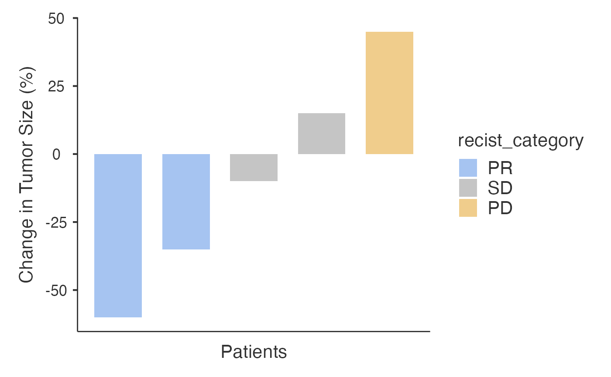
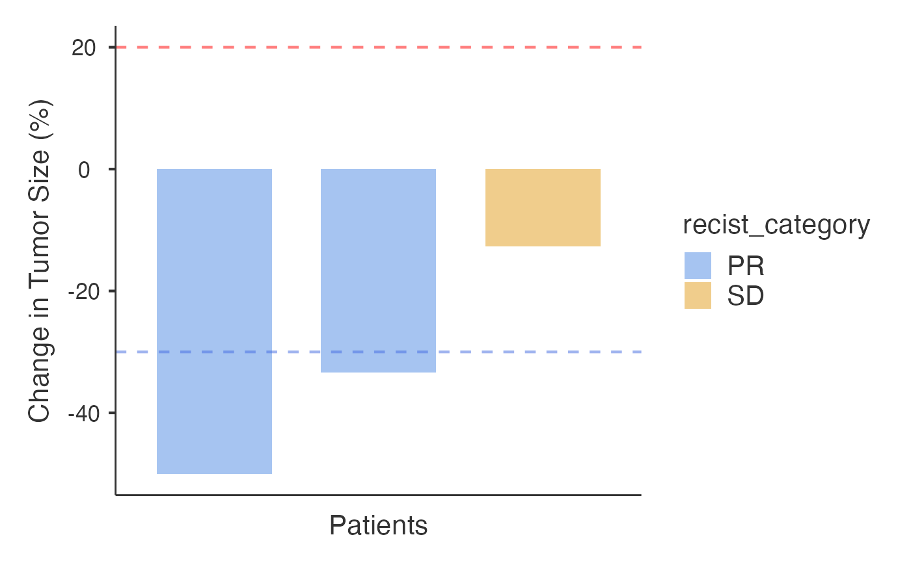

Creates waterfall and spider plots to analyze tumor response data following RECIST criteria. Supports both raw tumor measurements and pre-calculated percentage changes. Provides comprehensive response analysis including ORR, DCR, and person-time metrics.
Usage
waterfall(
data,
patientID,
responseVar,
timeVar = NULL,
groupVar = NULL,
inputType = "percentage",
sortBy = "response",
showThresholds = TRUE,
labelOutliers = FALSE,
showMedian = FALSE,
showCI = FALSE,
minResponseForLabel = 50,
colorBy = "recist",
colorScheme = "jamovi",
barAlpha = 1,
barWidth = 0.7,
showWaterfallPlot = TRUE,
showSpiderPlot = TRUE,
spiderColorBy = "response",
spiderColorScheme = "classic",
timeUnitLabel = "generic",
generateCopyReadyReport = FALSE,
showClinicalSignificance = FALSE,
showConfidenceIntervals = TRUE,
enableGuidedMode = FALSE
)Arguments
- data
The data as a data frame.
- patientID
Variable containing patient identifiers (e.g., PT001, Patient_1, Study_ID). Each patient should have a unique identifier for proper analysis.
- responseVar
Response variable: either raw tumor measurements (mm, cm, sum of diameters) or pre-calculated percentage changes from baseline. For raw measurements: requires time variable with baseline at time = 0. For percentages: negative values = tumor shrinkage (good response), positive values = tumor growth (poor response). Example: -30 means 30% decrease.
- timeVar
Time point of measurement (e.g., months from baseline, days from treatment start). Required for spider plot and raw measurement processing. Baseline should be time = 0.
- groupVar
Optional grouping variable for coloring bars by patient groups (e.g., treatment arms, disease subtypes). When specified, overrides RECIST category coloring to show group-based colors.
- inputType
Specify data format: 'raw' for actual tumor measurements (requires time variable) or 'percentage' for pre-calculated percentage changes from baseline
- sortBy
Sort the waterfall plot by best response or patient ID.
- showThresholds
Show +20% and -30% RECIST v1.1 thresholds as dashed lines. Helps identify Progressive Disease (PD) and Partial Response (PR) cutoffs.
- labelOutliers
Label responses exceeding the specified threshold.
- showMedian
Show median response as a horizontal line.
- showCI
Show confidence interval around median response.
- minResponseForLabel
Minimum response value for labels to be displayed.
- colorBy
Coloring method: RECIST categories or patient groups (requires Group Variable).
- colorScheme
Color scheme for waterfall plot. 'Colorful' provides distinct colors for group-based coloring.
- barAlpha
Transparency of bars in waterfall plot.
- barWidth
Width of bars in waterfall plot.
- showWaterfallPlot
Display the waterfall plot showing best response for each patient.
- showSpiderPlot
Display spider plot showing response trajectories over time (requires time variable).
- spiderColorBy
Coloring method for spider plot: Response status or patient groups. For backward compatibility, defaults to response status coloring.
- spiderColorScheme
Color scheme for spider plot lines and points.
- timeUnitLabel
Label to use for the spider plot time axis. Does not rescale data; only affects axis labeling.
- generateCopyReadyReport
Generate publication-ready result sentences with statistical details
- showClinicalSignificance
Display clinical significance interpretations for ORR and DCR
- showConfidenceIntervals
Calculate and display exact binomial confidence intervals for ORR and DCR
- enableGuidedMode
Enable step-by-step guidance for new users
Value
A results object containing:
results$guidedAnalysis | a html | ||||
results$todo | a html | ||||
results$todo2 | a html | ||||
results$clinicalSummary | a html | ||||
results$aboutAnalysis | a html | ||||
results$summaryTable | a table | ||||
results$personTimeTable | a table | ||||
results$clinicalMetrics | a table | ||||
results$waterfallplot | an image | ||||
results$spiderplot | an image | ||||
results$copyReadyReport | a html | ||||
results$clinicalSignificance | a html | ||||
results$clinicalGlossary | a html | ||||
results$enhancedClinicalMetrics | a table | ||||
results$groupComparisonTable | a table | ||||
results$groupComparisonTest | a table | ||||
results$addResponseCategory | an output |
Tables can be converted to data frames with asDF or as.data.frame. For example:
results$summaryTable$asDF
as.data.frame(results$summaryTable)
Examples
# \donttest{
# Example 1: Percentage data
data_pct <- data.frame(
PatientID = paste0("PT", 1:5),
Response = c(-60, -35, -10, 15, 45)
)
waterfall(
data = data_pct,
patientID = "PatientID",
responseVar = "Response",
inputType = "percentage"
)
#>
#> TREATMENT RESPONSE ANALYSIS
#>
#> <div style='background-color: #f8f9fa; padding: 15px; border-left: 4px
#> solid #1b9e77; margin: 10px 0;'><h4 style='color: #1b9e77; margin-top:
#> 0;'>Treatment Response Summary
#>
#> Analysis Overview: Response analysis of 5 patients using RECIST v1.1
#> criteria.
#>
#> Key Findings:
#>
#> Objective Response Rate (ORR): 40% (2 patients achieved complete or
#> partial response)Disease Control Rate (DCR): 80% (4 patients achieved
#> response or stable disease)
#>
#> Response Distribution:
#>
#> Partial Response: 2 patients (40%)Stable Disease: 2 patients
#> (40%)Progressive Disease: 1 patients (20%)
#>
#> Clinical Interpretation: This represents a promising response rate for
#> oncology studies.
#>
#> <div style='background-color: #f0f8ff; padding: 15px; border: 1px
#> solid #d1ecf1; border-radius: 5px; margin: 10px 0;'><h4 style='color:
#> #0c5460; margin-top: 0;'>What This Analysis Does
#>
#> The Treatment Response Analysis creates waterfall and spider plots to
#> visualize tumor response data according to RECIST v1.1 criteria.
#>
#> Visualization Types:
#>
#> Waterfall Plot: Shows best response for each patient as vertical bars,
#> ideal for single timepoint or best response data.Spider Plot: Shows
#> response trajectories over time as connected lines, requires time
#> variable for longitudinal data.
#>
#> When to Use This Analysis:
#>
#> Oncology clinical trials and treatment response studiesDrug efficacy
#> evaluationTumor response monitoringBiomarker correlation studies
#>
#> Data Requirements:
#>
#> Patient ID: Unique identifier for each patientResponse Data: Either
#> percentage changes from baseline or raw tumor measurementsTime
#> Variable: Required for spider plots (e.g., months from baseline)
#>
#> Key Assumptions & Limitations:
#>
#> RECIST v1.1 thresholds: CR ≤-100%, PR ≤-30%, PD >+20%For raw
#> measurements, baseline assumed at time = 0Waterfall plot shows best
#> (most negative) response per patientMissing values are excluded from
#> analysis
#>
#> *Tip: Start with percentage data if available, or use raw measurements
#> with proper time variables for automatic calculation.*
#>
#> Response Categories Based on RECIST v1.1 Criteria
#> ─────────────────────────────────────────────────
#> Category Number of Patients Percentage
#> ─────────────────────────────────────────────────
#> CR ᵃ 0 0.0000000
#> PR ᵇ 2 0.4000000
#> SD ᵈ 2 0.4000000
#> PD ᵉ 1 0.2000000
#> ─────────────────────────────────────────────────
#> ᵃ Complete Response (CR): Complete
#> disappearance of all target lesions.
#> ᵇ Partial Response (PR): At least 30%
#> decrease in sum of target lesions.
#> ᵈ Stable Disease (SD): Neither PR nor PD
#> criteria met.
#> ᵉ Progressive Disease (PD): At least 20%
#> increase in sum of target lesions.
#>
#>
#> Clinical Response Metrics
#> ──────────────────────────────────────────────────────────────────────────────────────────────────────
#> Metric Value
#> ──────────────────────────────────────────────────────────────────────────────────────────────────────
#> Objective Response Rate (CR+PR) 40.0% (Promising activity - warrants further investigation)
#> Disease Control Rate (CR+PR+SD) 80.0% (Excellent disease control)
#> Statistical Power (ORR vs 15% null) 20.6% (Very low statistical power (<40%))
#> ──────────────────────────────────────────────────────────────────────────────────────────────────────
#>
#>
#> Enhanced Clinical Response Metrics
#> ─────────────────────────────────────────────────────────────────────────────────────────────────────────────────────────────────
#> Metric Value 95% CI Lower 95% CI Upper Clinical Interpretation
#> ─────────────────────────────────────────────────────────────────────────────────────────────────────────────────────────────────
#> Objective Response Rate (ORR) 40.0% 5.300000 85.30000 Promising activity - warrants further investigation
#> Disease Control Rate (DCR) 80.0% 28.400000 99.50000 Excellent disease control
#> ─────────────────────────────────────────────────────────────────────────────────────────────────────────────────────────────────
#>
#> Warning: The `size` argument of `element_line()` is deprecated as of ggplot2 3.4.0.
#> ℹ Please use the `linewidth` argument instead.
#> ℹ The deprecated feature was likely used in the jmvcore package.
#> Please report the issue at <https://github.com/jamovi/jmvcore/issues>.

# Example 2: Raw measurements
data_raw <- data.frame(
PatientID = rep(paste0("PT", 1:3), each = 3),
Time = rep(c(0, 2, 4), 3),
Measurement = c(50, 30, 25, 60, 45, 40, 55, 50, 48)
)
waterfall(
data = data_raw,
patientID = "PatientID",
responseVar = "Measurement",
timeVar = "Time",
inputType = "raw"
)
#>
#> TREATMENT RESPONSE ANALYSIS
#>
#> <div style='background-color: #f8f9fa; padding: 15px; border-left: 4px
#> solid #1b9e77; margin: 10px 0;'><h4 style='color: #1b9e77; margin-top:
#> 0;'>Treatment Response Summary
#>
#> Analysis Overview: Response analysis of 3 patients using RECIST v1.1
#> criteria.
#>
#> Key Findings:
#>
#> Objective Response Rate (ORR): 66.7% (2 patients achieved complete or
#> partial response)Disease Control Rate (DCR): 100% (3 patients achieved
#> response or stable disease)
#>
#> Response Distribution:
#>
#> Partial Response: 2 patients (66.7%)Stable Disease: 1 patients (33.3%)
#>
#> *Methods note: Person-time metrics summarize the total time patients
#> spend in response relative to total follow-up, reported here as
#> response time per 100 person-time units.*
#>
#> Clinical Interpretation: This represents a promising response rate for
#> oncology studies.
#>
#> <div style='background-color: #f0f8ff; padding: 15px; border: 1px
#> solid #d1ecf1; border-radius: 5px; margin: 10px 0;'><h4 style='color:
#> #0c5460; margin-top: 0;'>What This Analysis Does
#>
#> The Treatment Response Analysis creates waterfall and spider plots to
#> visualize tumor response data according to RECIST v1.1 criteria.
#>
#> Visualization Types:
#>
#> Waterfall Plot: Shows best response for each patient as vertical bars,
#> ideal for single timepoint or best response data.Spider Plot: Shows
#> response trajectories over time as connected lines, requires time
#> variable for longitudinal data.
#>
#> When to Use This Analysis:
#>
#> Oncology clinical trials and treatment response studiesDrug efficacy
#> evaluationTumor response monitoringBiomarker correlation studies
#>
#> Data Requirements:
#>
#> Patient ID: Unique identifier for each patientResponse Data: Either
#> percentage changes from baseline or raw tumor measurementsTime
#> Variable: Required for spider plots (e.g., months from baseline)
#>
#> Key Assumptions & Limitations:
#>
#> RECIST v1.1 thresholds: CR ≤-100%, PR ≤-30%, PD >+20%For raw
#> measurements, baseline assumed at time = 0Waterfall plot shows best
#> (most negative) response per patientMissing values are excluded from
#> analysis
#>
#> *Tip: Start with percentage data if available, or use raw measurements
#> with proper time variables for automatic calculation.*
#>
#> Response Categories Based on RECIST v1.1 Criteria
#> ─────────────────────────────────────────────────
#> Category Number of Patients Percentage
#> ─────────────────────────────────────────────────
#> CR ᵃ 0 0.0000000
#> PR ᵇ 2 0.6666667
#> SD ᵈ 1 0.3333333
#> PD ᵉ 0 0.0000000
#> ─────────────────────────────────────────────────
#> ᵃ Complete Response (CR): Complete
#> disappearance of all target lesions.
#> ᵇ Partial Response (PR): At least 30%
#> decrease in sum of target lesions.
#> ᵈ Stable Disease (SD): Neither PR nor PD
#> criteria met.
#> ᵉ Progressive Disease (PD): At least 20%
#> increase in sum of target lesions.
#>
#>
#> Person-Time Analysis
#> ──────────────────────────────────────────────────────────────────────────────────────────────────────────────────────
#> Response Category Patients % Patients Person-Time % Time Median Time to Response Median Duration
#> ──────────────────────────────────────────────────────────────────────────────────────────────────────────────────────
#> CR 0 0.0% 0.0 0.0% NA NA
#> PR 2 66.7% 8.0 66.7% 4.0 1.0
#> SD 1 33.3% 4.0 33.3% 4.0 0.0
#> PD 0 0.0% 0.0 0.0% NA NA
#> Total 3 100.0% 12.0 100.0%
#> ──────────────────────────────────────────────────────────────────────────────────────────────────────────────────────
#>
#>
#> Clinical Response Metrics
#> ──────────────────────────────────────────────────────────────────────────────────────────────────────────
#> Metric Value
#> ──────────────────────────────────────────────────────────────────────────────────────────────────────────
#> Objective Response Rate (CR+PR) 66.7% (Promising activity - warrants further investigation)
#> Disease Control Rate (CR+PR+SD) 100.0% (Excellent disease control)
#> Median Time to First Response 3.0 time units (n=2 responders)
#> Median Duration of Response 1.0 time units (n=2 with duration data)
#> Median Time to Response insufficient data
#> Median Duration of Response 2.0 time units (short-term response)
#> Response Time per 100 Person-Time Units 16.67
#> ──────────────────────────────────────────────────────────────────────────────────────────────────────────
#>
#>
#> Enhanced Clinical Response Metrics
#> ──────────────────────────────────────────────────────────────────────────────────────────────────────────────────────────────────
#> Metric Value 95% CI Lower 95% CI Upper Clinical Interpretation
#> ──────────────────────────────────────────────────────────────────────────────────────────────────────────────────────────────────
#> Objective Response Rate (ORR) 66.7% 9.400000 99.20000 Promising activity - warrants further investigation
#> Disease Control Rate (DCR) 100.0% 29.200000 100.00000 Excellent disease control
#> ──────────────────────────────────────────────────────────────────────────────────────────────────────────────────────────────────
#>

#> Error in p + ggplot2::geom_hline(yintercept = c(private$RECIST_PR_THRESHOLD, private$RECIST_PD_THRESHOLD), linetype = "dashed", color = "gray50", alpha = 0.5) + x_unit_label <- switch(options$timeUnitLabel, days = .("Days from Baseline"), weeks = .("Weeks from Baseline"), months = .("Months from Baseline"), years = .("Years from Baseline"), .("Time from Baseline")): could not find function "+<-"
# }